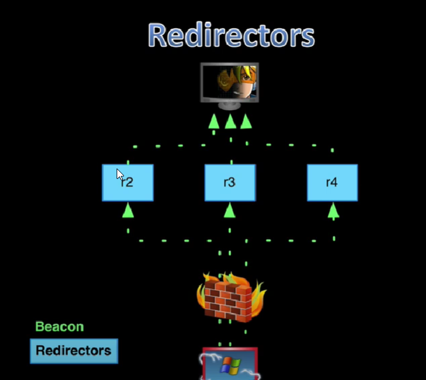

This is a way of giving yourself multiple addresses during an engagement
cdn - Content delivery network
CDN Redirectors - - use valid SSL certificate
- ~often time the CDN requires one
- Allow HTTP POST and HTTP GET verbs- - Consider HTTP-GET only C2
- - Disable all cache options
- ~ giving a better chance to redirect to your cobalt server
- - be aware of transformed requests
- ~ Cloudfrontlikes to rearrange the cookie value
- ~ if youre beacon Malleable c2 profileis using the cookie header to send data back to cobalt strike
- ~ possible to break contractbetween Malleable c2 profile the beacon payload and the beacon controller
- Server Consolidation
-
------------------------------------------------------------------------------------------------------------------------------------------------------------------------------------------------------------------------------------------------------------------------------------------------


- - socat TCP4-LISTEN:80,fork TCP4:[team server]:80

Setup redirect proxy
so linux commands for getting the proxy running- > sudo socat TCP4-LISTEN:80, fork TCP4:secure.losenolove.com:80
- **cntr-z** to pause
- > bg backgrounds the proxy
- > screen -d
Now create listeners for each of the redirects